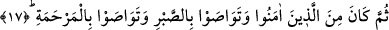

16. Yahut aç-açık bir yoksulu (doyurmaktır).
“Yahut aç-açık” yâni ihtiyaç sâhibi “bir yoksulu doyurmaktır.”
“Metrebe” fakirlik demektir. Fakirlik ve zaruretinden âdetâ toprağa yapıştı, demektir.
Onun ne üstünü örteceği ne de altına serip döşeyeceği bir şeyi vardır.
“Zâ-metrebe” ifâdesi hakkında Hz. Peygamber (a.s.)’ın “barınağı mezbelelikler olan”
demek olduğunu söylediği nakledilmiştir.[109]
İbn Abbâs (r.a.) ise bu ifâdenin toprağı uzak, yâni garip mânâsına olduğunu
söylemiştir. Nitekim Kâşifî: “Bu, ya evlad ü iyal sâhibi, ya borçlu, ya bir şey istemeyen
bir hasta ya da memleketinden uzak bir garîb kimsedir.” demiştir.
Bir hadiste şöyle buyrulmuştur: “Kocasız kadınlarla, yoksulların işlerine koşan
kimse, Allah yolunda cihâd etmiş gibi sevap kazanır. O kimse tıpkı geceleri durmadan
namaz kılan, gündüzleri hiç ara vermeden oruç tutan kimse gibidir.” [110]
Fakir (Bursevî) der ki: Köle azad etme ve doyurma fiilleri ile amel etmenin
zorluğundan dolayı özel olarak zikredilmiştir. Doyurma yetim ve fakire tahsis edilmiştir.
Çünkü bu nefse ağır gelir. Kişi kendi heva ve hevesi uğruna binleri harcar, heva ve
heves ehli kimseleri yedirir, ihtiyaç fazlası han, hamam ve benzerlerini yapar ve bunları
çok görmez. Fakire ve yetime gelince gözünde değersiz oldukları için onları görmez ve
onlara bir-iki dirhem ya da bir-iki lokma vermek ona çok ağır gelir.
İmam Şâfiî (r.h.) bu âyeti “miskîn”in az da olsa bir şeylere mâlik olan fakir olduğuna
delil saymıştır. Aksi halde “Zâ-metrebe” ifâdesi tekrar olmuş olur ki bu câiz değildir.
Burada “Zâ-metrebe” ifâdesinin “miskîn” kelimesini açığa çıkaran bir sıfat olmasının
mümkün olduğu tartışılmıştır. “Miskîn” kelimesinin “Zâ-metrebe” ile nitelenmesinin
faydası onun ihtiyaç yönünü açıklamaktır. Bundan gaye en çok muhtaç olan kimseyi
doyurmanın daha faziletli olduğunu ortaya koymaktır. Caiz olmayan tekrara gelince bu
herhangi bir faydadan uzak olan tekrardır. Bizim üzerinde durduğumuz âyet-i kerimede
bu kabil bir faydasız ve gereksiz tekrar yoktur.
Bu âyette nefis ve hevâ elinde mağlûb olmuş kalp yetimine, nefsin kahrı ve izzeti
altında zelil hale gelmiş sır miskînine işâret vardır.
17. Sonra îman edenlerden, birbirlerine sabrı tavsiye edenlerden ve birbirlerine
acımayı öğütleyenlerden olmaktır.
“Sonra” bu köle âzâd eden ve doyuran kimse “îman edenlerden” olmaktır.
“Sümme” kelimesi, îman bütün sâlih ameller için şart olduğundan mertebesinin köle
azad etmek, sadaka vermek gibi fiillerden daha yüksek olduğunu ifâde etmek için
getirilmiştir. Yoksa îman zaman bakımından bütün tâatlerden öncedir. Mânâ ise
şöyledir: Bu şekilde yapılan infak ve harcama Allah katında faydalı ve hoşnud olunan